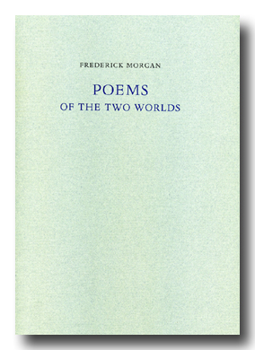
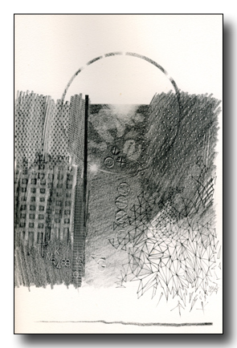

Poems of the Two Worlds, 1977 limited edition
six poems illustrated with drawings by Clyde Lynds
Stamperia Valdonega
48 pages; ISBN 0-252-00604-6
six poems illustrated with drawings by Clyde Lynds
Stamperia Valdonega
48 pages; ISBN 0-252-00604-6
Available for purchase from The Hudson Review.
Click here to read selections from this book.

This edition of five hundred copies was designed, set and printed by Stamperia Valdonega in Verona on Magnani mould made paper. The negatives for the plates were supplied by Parabolic in Milan. September MCMLXXVI.
Deluxe copies 1-100, signed on the colophon page by the author and the artist.